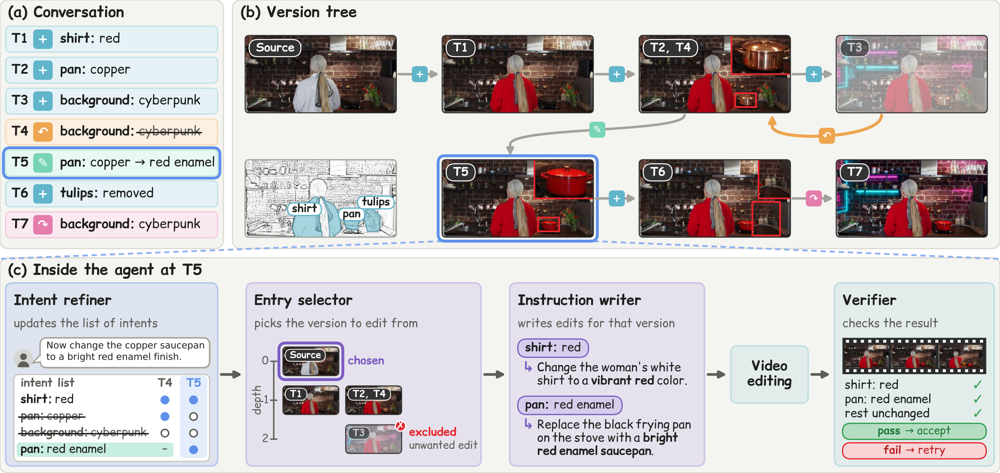
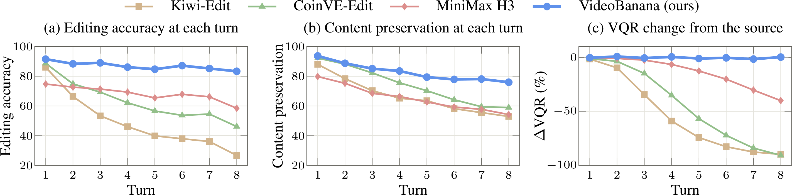

Source
Video editing is often multi-turn and conversational. Within one session, a user gives instruction after instruction, and each result should reflect all of them so far. Each instruction depends on the conversation history, so it can revise or undo an earlier edit. Instruction-guided video editors, however, are built for a single request on the source video, and existing video editing benchmarks score each request on its own. We therefore introduce ChatVE-Bench, a benchmark of multi-turn, conversational video editing. Its 144 sessions of 5 to 8 turns add follow-up edits, revise earlier edits, undo any earlier step, and redo undone edits. Every turn is scored with a checklist built from the expected state of the session. On ChatVE-Bench, editors used turn-by-turn edit their own outputs again and again. After a few generations, their video quality falls, and so does the accuracy of new edits. They can undo only by issuing another edit, which often fails to restore what the undone edit replaced.
We then propose VideoBanana, an agent that treats such editing as tracking the goal of the conversation over a tree of verifier-scored checkpoints. At every turn, it restates the full goal as atomic intents and chooses the entry video from any earlier checkpoint, so undo becomes backtracking and every output stays within a few generations of the source. It writes editor instructions for the intents that entry does not yet satisfy, executes them with a single-turn editing agent, and verifies the output against the goal. With the same editor, VideoBanana raises final-turn editing accuracy from 50.6 to 85.3 and content preservation from 60.3 to 76.2 over editing turn by turn. It undoes reliably and largely keeps video quality close to the source at every turn.
One ChatVE-Bench session edited by VideoBanana. Each video is the output after that turn.
Every turn is scored with a checklist built from the expected state of the whole session.
Every turn also has one of six edit types: attribute, replacement, addition, removal, local style, and visual effect.
Each row shows the source video (left),
VideoBanana's output after the final turn (middleright),
and every request of the session (rightbelow).
T1Can you render the blonde woman in an anime style with clean cel shading and distinct linework? T2Now, add a gently falling snow effect throughout the background scene. T3Place a red skateboard resting on the ground next to the blonde woman. T4Could you change the wheels on that red skateboard to neon green? T5Actually, instead of the falling snow, add a light drifting fog effect floating around the white lamp posts.
T1Could you add some drifting fog throughout the station interior? T2Next, change the blue wall column on the left side to bright red. T3Please remove the metal handrail running diagonally down the ramp in the foreground. T4Actually, undo the color edit on the left wall column. T5Now render the large digital display screen in an oil painting style with thick, visible brushstrokes. T6On second thought, bring back the column color change.
T1Can you style the background street scene framed by the gateway in a cyberpunk aesthetic with high contrast and glowing neon lights? T2Great! Now change the woman's yellow jacket to bright red. T3Let me also remove the black dumpster on the left side of the scene. T4Actually, bring back the black dumpster on the left side. T5On second thought, make the woman's jacket electric blue instead of red. T6You know what, go ahead and remove that black dumpster on the left again.
| Benchmark | Sessions | Turns | Checklist questions | Multi-turn | Conversational | Undo | Revision | State-based | ||
|---|---|---|---|---|---|---|---|---|---|---|
| per session | total | per session | total | |||||||
| VEFX-Bench | 300 | 1 | 300 | – | – | ✗ | ✗ | ✗ | ✗ | ✗ |
| CoinVE-Bench | 361 | 1 | 361 | 11.4 | 4,131 | ✗ | ✗ | ✗ | ✗ | ✗ |
| CoVEBench | 626 | 1 | 626 | 16.0 | 9,990 | ✗ | ✗ | ✗ | ✗ | ✗ |
| IVEBench | 600 | 1 | 600 | – | – | ✗ | ✗ | ✗ | ✗ | ✗ |
| ChatVE-Bench (ours) | 144 | 5–8 | 907 | 75.7 | 10,903 | ✓ | ✓ | ✓ | ✓ | ✓ |
At every turn, VideoBanana runs the four modules shown in (c).
The figure follows the kitchen session from Multi-Turn Editing above.

| Editing accuracy | Preservation | Video quality | ||||||||||
|---|---|---|---|---|---|---|---|---|---|---|---|---|
| Method | SA | SPA | EP | EA | CP | TQ | ΔTQ | VQR | ΔVQR | PC | AES | MSM |
| Source clip | – | – | – | – | – | 14.54 | – | 4.08 | – | 0.461 | 5.10 | 0.756 |
| Final turn | ||||||||||||
| Kiwi-Edit | 43.2 | 24.3 | 38.3 | 35.3 | 55.9 | 10.57 | −19% | 0.72 | −82% | 0.341 | 4.30 | 0.731 |
| CoinVE-Edit | 53.5 | 42.2 | 56.1 | 50.6 | 60.3 | 11.47 | −16% | 0.98 | −76% | 0.313 | 4.42 | 0.762 |
| MiniMax H3 | 62.9 | 66.5 | 61.9 | 63.8 | 58.4 | 12.04 | −11% | 3.09 | −23% | 0.349 | 4.31 | 0.768 |
| VideoBanana (ours) | ||||||||||||
| VLM: Qwen | 83.3 | 84.6 | 84.7 | 84.2 | 75.7 | 16.72 | +22% | 3.99 | −1% | 0.400 | 5.19 | 0.761 |
| VLM: Gemini | 83.8 | 87.7 | 84.5 | 85.3 | 76.2 | 16.67 | +22% | 3.99 | −1% | 0.385 | 5.21 | 0.767 |
| All turns | ||||||||||||
| Kiwi-Edit | 49.0 | 42.5 | 48.4 | 46.7 | 69.3 | 13.21 | −3% | 2.20 | −46% | 0.368 | 4.62 | 0.745 |
| CoinVE-Edit | 60.7 | 60.2 | 64.3 | 61.7 | 77.2 | 14.42 | +5% | 2.70 | −34% | 0.369 | 4.77 | 0.764 |
| MiniMax H3 | 65.0 | 75.8 | 64.0 | 68.3 | 67.7 | 13.74 | 0% | 3.69 | −9% | 0.381 | 4.46 | 0.775 |
| VideoBanana (ours) | ||||||||||||
| VLM: Qwen | 84.2 | 88.1 | 86.4 | 86.2 | 83.1 | 16.26 | +17% | 4.05 | 0% | 0.416 | 5.26 | 0.764 |
| VLM: Gemini | 85.0 | 88.4 | 86.7 | 86.7 | 84.2 | 16.37 | +18% | 4.06 | 0% | 0.405 | 5.27 | 0.768 |

@article{zhang2026videobanana,
title = {VideoBanana: Agentic Multi-Turn Conversational Video Editing},
author = {Zhang, Jiayi and Gao, Xiangbo and Dongre, Vardhan and
Dernoncourt, Franck and Rossi, Ryan A. and Tu, Zhengzhong},
journal = {arXiv preprint},
year = {2026}
}